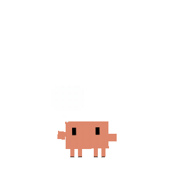
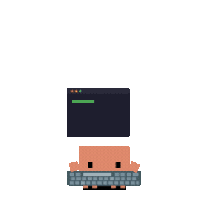
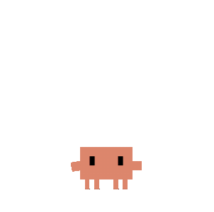
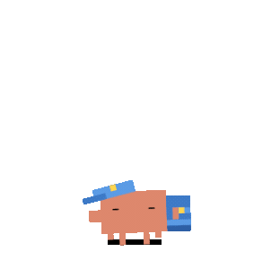
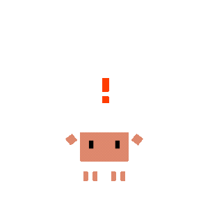
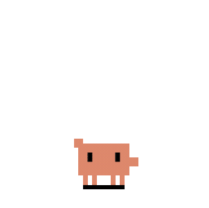
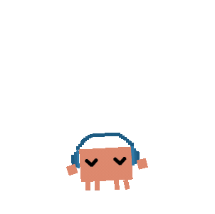
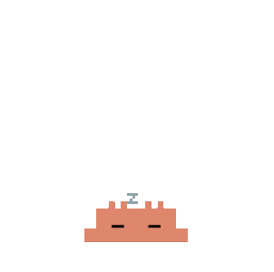
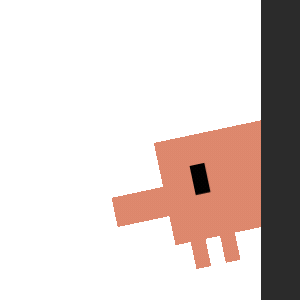

Clawd — task → animation map (clawd-on-desk, AGPL-3.0)
Real Clawd pixel-crab animations, mapped to Clyde's assistant states. Basis for our own task-triggered set.

Idle / waiting
clawd-idle

Listening
clawd-mini-peek

Thinking
clawd-thinking

Texting / typing
clawd-typing

Reading screen
clawd-idle-reading

Working / tapping
clawd-building

Navigating
clawd-carrying

Success
clawd-happy

Celebrate
react-double-jump

Error / blocked
clawd-error

Notify
clawd-notification

Long task
headphones-groove

Asleep / away
clawd-sleeping

FAB (minimized)
clawd-mini-idle

Moving
mini-crabwalk